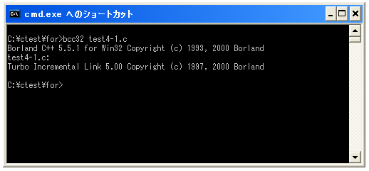
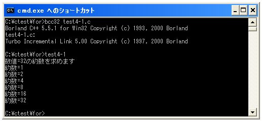

do..while文
「while」文と似たものとして「do .. while」文があります。大きな違いは「while」文が繰り返し処理が行われる前に条件式が評価されるのに対して「do .. while」文は繰り返し処理が行われた後に条件式が評価されます。その為「while」文では場合によっては一度も繰り返し処理が行われない可能性がありますが、「do .. while」文の場合は最低限1回は繰り返し処理を実行します。
「do .. while」文の書式は次のようになります。
do{
実行する処理1;
実行する処理2;
実行する処理3;
....
}while (条件式);
※「do .. while」文でも処理が1つの場合は括弧で囲わなくても構いませんが、「do .. while」文で括弧が無いと分かりにくくなりますので処理が1つの場合でも「{」と「}」で囲んで指定した方がいいです。
「do .. while」文では条件式を評価し真の間は繰り返し処理を行います。必ず一度は繰り返しの中の処理を実行しますので例えばパスワードを入力してもらい一致するまで繰り返し処理を行う場合には次のように記述できます。
do{
パスワードを入力してもらう
}while (パスワードが正しいかどうか判別);
「while」文の時は次のように記述していました。違う点がお分かり頂けると思います。
パスワードを入力してもらう
while (パスワードが正しいかどうか判別){
パスワードを入力してもらう
}
また注意する点として「do .. while」文では最後にセミコロン(;)が必要となります。書き忘れないように注意して下さい。
実際には次のように記述します(今までの学習範囲でサンプルを作成するためfor文の場合と似たようなサンプルとなります)。
int i = 0;
do{
printf("こんにちは¥n");
i++;
}while (i < 2);
上記は次のような動作を行います。
変数「i」に「0」を格納する 「こんにちは」を出力する 変数「i」の値に「1」を加えて「1」にする 変数「i」の値が「2」より小さいかどうか評価する = 真 「こんにちは」を出力する 変数「i」の値に「1」を加えて「2」にする 変数「i」の値が「2」より小さいかどうか評価する = 偽 繰り返し処理終了
「while」文と「do .. while」文は非常に似ていますので注意して使い分けて下さい。
サンプルプログラム
では簡単なサンプルプログラムを作成して試してみます。
#include <stdio.h>
int main(void){
int num = 32;
int i = 1;
printf("数値=%dの約数を求めます¥n", num);
do{
if (num % i == 0){
printf("約数=%d¥n", i);
}
i++;
}while (i <= num);
return 0;
}
上記を「test4-1.c」の名前で保存します。まずコンパイルを行います。

コンパイルが終わりましたら「test4-1」と入力して実行します。

( Written by Tatsuo Ikura )

著者 / TATSUO IKURA
初心者～中級者の方を対象としたプログラミング方法や開発環境の構築の解説を行うサイトの運営を行っています。